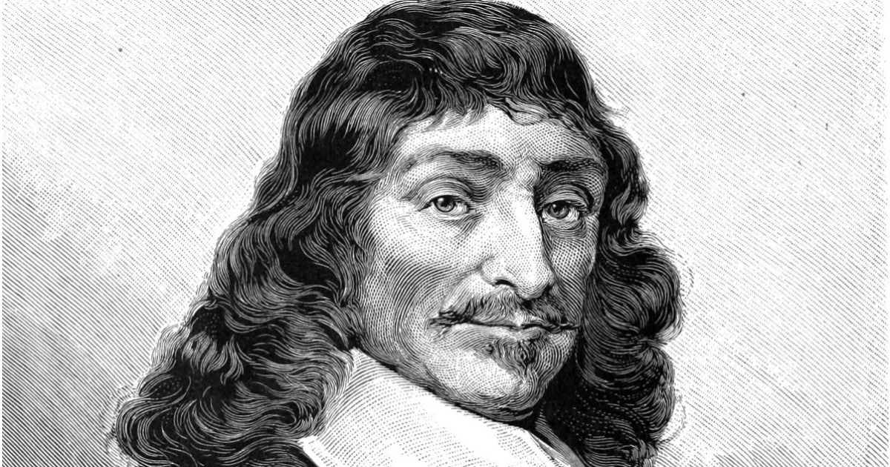

RACIONALISMO:RAZÃO E VERDADE
Por Sofia Dinsmore - 4 de Agosto, 2023

O racionalismo surgiu no contexto do Renascimento e da Revolução Científica, uma valorização da razão, da lógica e do método científico que se tornou cada vez mais importante, moldando a forma como a filosofia e a ciência foram estudadas nos séculos seguintes.
René Descartes
Por Sofia Dinsmore - 3 de Agosto, 2023
René Descartes (1596-1650) foi um filósofo, matemático e cientista francês, amplamente considerado como um dos pensadores mais importantes da história da filosofia. Ele é conhecido como o "pai da filosofia moderna" e um dos fundadores do racionalismo.
Nascido em La Haille-en-Touraine (atual Descartes, França), Descartes recebeu uma sólida educação clássica em um colégio jesuíta. Ele se destacou em matemática e ciências, desenvolvendo métodos inovadores para o estudo da geometria analítica.
Método cartesiano
Por Davi Romão - 3 de Agosto, 2023
texto davi
Dúvida metódica
Argumento dos sentidos
Por Isabelly Pereira - 3 de Agosto, 2023
texto Isabelly
Argumento do sonho
Por Vitória Oliveira - 3 de Agosto, 2023
texto viih
Argumento do gênio maligno
Por Abner Romão - 3 de Agosto, 2023
texto abner